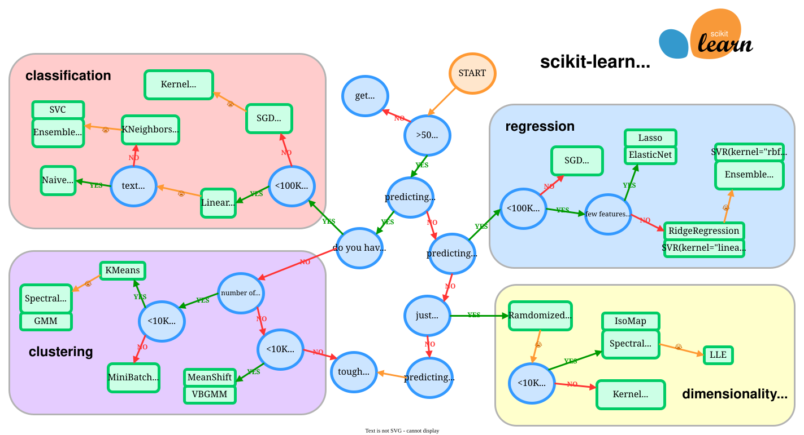
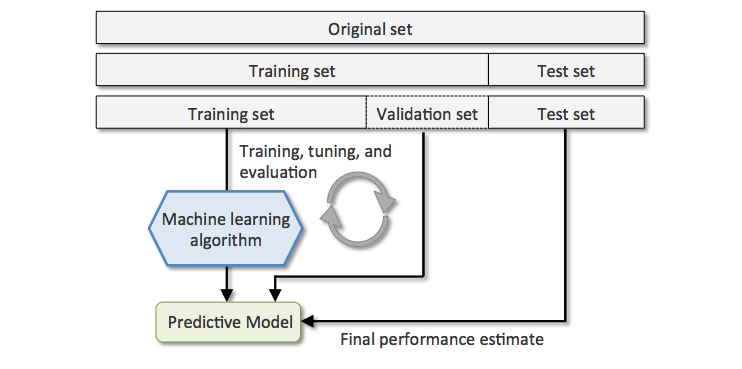

set.seed(123)
library(nycflights13)
flight_data <-
flights %>%
mutate(
# On change le retard en facteur
arr_delay = ifelse(arr_delay >= 30, "late", "on_time"),
arr_delay = factor(arr_delay)
) %>%
# On ajoute les données de météo
inner_join(weather, by = c("origin", "time_hour")) %>%
# On ne garde que les colonnes utiles
select(dep_time, flight, origin, dest, air_time, distance,
carrier, arr_delay, time_hour, temp, wind_speed, precip) %>%
# On enlève les lignes avec des données manquantes
na.omit() %>%
# Pour faire des modèles, on préfère avoir des facteurs que du texte
mutate_if(is.character, as.factor) %>%
sample_n(size = 1000) # Pour que ça aille vite...09 - Feature engineering
PRO1036 - Analyse de données scientifiques en R
Tim Bollé
November 24, 2025
Modélisation
Modélisation
Intervient dans le processus d’analyse de données

Le machine learning permet notamment de prédire des valeurs et prendre des décisions.
Processus de modélisation
- Exploratory data analysis (EDA): Comprendre les données, se poser des questions
- Feature engineering: Créer de nouvelles variables à partir des données ou sélectionner les variables les plus pertinentes
- Sélection de modèle et tuning: Choisir le modèle le plus adapté et ajuster les hyperparamètres
- Évaluation du modèle: Mesurer la performance du modèle
Processus de modélisation

Choix du modèle
- Supervised learning: On a des données étiquetées
- Classification
- Régression
- Unsupervised learning: On a des données non étiquetées
- Clustering
- Réduction de dimension
- …
Choix du modèle

Modàlisation et tidyverse
Tidymodel est un ensemble de packages qui permettent de faire du machine learning avec le tidyverse.
On retrouve les packages:
parsnip: Interface pour les modèlesdials: Sélection d’hyperparamètrestune: Tuning des hyperparamètresworkflow: Workflows pour les modèlesyardstick: Métriques de performancerecipes: Préparation des données
Données du jour
nycflights13
Le package nycflights13 contient des données sur les vols au départ de New York en 2013.
Données
# A tibble: 5 × 12
dep_time flight origin dest air_time distance carrier arr_delay
<int> <int> <fct> <fct> <dbl> <dbl> <fct> <fct>
1 1220 1191 JFK ACK 45 199 B6 on_time
2 703 1665 EWR LAX 353 2454 UA on_time
3 1321 1054 EWR LAX 338 2454 UA on_time
4 651 315 JFK SJU 195 1598 DL on_time
5 2200 3832 EWR PVD 30 160 EV on_time
# ℹ 4 more variables: time_hour <dttm>, temp <dbl>, wind_speed <dbl>,
# precip <dbl>Feature engineering
Késako ?
Le feature engineering (ou ingénierie des caractéristiques) est le processus de création, de transformation et de sélection des variables (features) utilisées pour entraîner un modèle de machine learning.
L’idée est de préparer les données de manière à améliorer la performance du modèle.
Une première approche : mutate()
flight_data %>%
mutate(
# Nous aurons besoin de la date
date = lubridate::as_date(time_hour),
dow = wday(date),
month = month(date)
) %>%
select(-time_hour) %>%
sample_n(size = 5) %>%
select(date, dow, month)# A tibble: 5 × 3
date dow month
<date> <dbl> <dbl>
1 2013-04-30 3 4
2 2013-06-21 6 6
3 2013-10-18 6 10
4 2013-02-21 5 2
5 2013-08-27 3 8Feitures engineering avec recipes
tidymodels et son package recipes permettent de créer des recettes pour préparer les données. Cela permet de transformer certaines variables, de créer de nouvelles variables, etc.
Nous allons chercher à prédire le retard en fonction de différentes variables
Séparation des données
Recettes
Une recette de base prend une formule et des données
Par défaut, toutes les variables sont des predictors.
# A tibble: 12 × 4
variable type role source
<chr> <list> <chr> <chr>
1 dep_time <chr [2]> predictor original
2 flight <chr [2]> predictor original
3 origin <chr [3]> predictor original
4 dest <chr [3]> predictor original
5 air_time <chr [2]> predictor original
6 distance <chr [2]> predictor original
7 carrier <chr [3]> predictor original
8 time_hour <chr [1]> predictor original
9 temp <chr [2]> predictor original
10 wind_speed <chr [2]> predictor original
11 precip <chr [2]> predictor original
12 arr_delay <chr [3]> outcome originalRecettes
Nous pouvons maintenant appliquer des transformations sur les colonnes pour créer des variables adaptées à notre modèle.
Il existe de nombreuses recettes dans le package recipes. Elles ont toute la forme step_X() où X sera le nom d’une recette. La liste des recettes est disponible ici
Par exemple, la recette step_date permet de transformer une date en une autre variable (jour de la semaine, mois, années, …)
Résultat
Recettes
Nous allons transformer les variables de différentes manières:
update_role: Pour indiquer les variables que l’on veut garder comme identifiant (ID)step_multate: Pour créer de nouvelles variables comme un mutate normalstep_date: Pour transformer la date en variables plus utilesstep_holiday: Pour indiquer si une date tombe un jour fériéstep_dummy: Pour transformer les variables catégorielles en variables binairesstep_rm: Pour supprimer des colonnesstep_zv: Pour supprimer les variables avec une variance nulle
Recettes
flights_rec <- recipe(arr_delay ~ ., data = train_data) %>%
update_role(flight, time_hour, new_role = "ID") %>%
step_mutate(date = lubridate::as_date(time_hour)) %>%
step_rm(time_hour) %>%
step_date(date, features = c("dow", "month")) %>%
step_holiday(date,
holidays = timeDate::listHolidays("US"),
keep_original_cols = FALSE) %>%
step_cut(temp,
breaks = 32) %>% # On crée des catégories de température
step_dummy(all_nominal_predictors()) %>%
step_zv(all_predictors()) # On enlève les variables avec une variance nulleWorkflow
Faire un workflow
Un workflow est une combinaison d’une recette et d’un modèle. Il permet d’enchainer différentes opérations.
Commençons par définir un modèle:
workflow
Nous pouvons maintenant combiner notre recette et notre modèle pour créer un workflow.
══ Workflow ════════════════════════════════════════════════════════════════════
Preprocessor: Recipe
Model: logistic_reg()
── Preprocessor ────────────────────────────────────────────────────────────────
7 Recipe Steps
• step_mutate()
• step_rm()
• step_date()
• step_holiday()
• step_cut()
• step_dummy()
• step_zv()
── Model ───────────────────────────────────────────────────────────────────────
Logistic Regression Model Specification (classification)
Computational engine: glm Entrainer un workflow
Nous pouvons ensuite entraîner notre modèle. Pour cela, nous pouvons directement utiliser la fonction fit du workflow.
Faire les prédictions
# A tibble: 5 × 2
.pred_class arr_delay
<fct> <fct>
1 on_time on_time
2 late late
3 on_time on_time
4 on_time on_time
5 on_time on_time Évaluation du modèle

Évaluation du modèle

Rééchantillonnage et Cross-validation
Problème…
Comment peut-on paramétrer notre modèle pour qu’il soit le plus performant possible, sachant que nous ne voulons pas toucher aux données de test ?
Évaluer la performance sur les données d’entraînement
Sur les données d’entraînement:
Évaluer la performance sur les données d’entraînement
Sur les données d’entraînement:
Conclusion
Le modèle d’entrainement n’est pas représentatif de la performance réelle du modèle.
Faire des prédictions sur les données d’entraînement reflète seulement ce que le modèle connait déjà.
Première idée : Jeu de validation

Rééchantillonnage
Pour obtenir une meilleure estimation de la performance du modèle, on peut utiliser le rééchantillonnage.

Rééchantillonnage
Il existe plusieurs méthodes de rééchantillonnage:
- Validation croisée
- Bootstrap
- Leave-one-out
- …
Nous allons utiliser la validation croisée.
Validation croisée

Validation croisée
Rééchantillonnage
Nous pouvons alors entraîner notre modèle sur les différents folds.
# A tibble: 3 × 6
.metric .estimator mean n std_err .config
<chr> <chr> <dbl> <int> <dbl> <chr>
1 accuracy binary 0.816 5 0.0185 pre0_mod0_post0
2 brier_class binary 0.156 5 0.0237 pre0_mod0_post0
3 roc_auc binary 0.637 5 0.0338 pre0_mod0_post0Nous voyons que les performances sont assez similaires à celles obtenues avec les données de test !
Détails dans les métriques
# A tibble: 15 × 5
id .metric .estimator .estimate .config
<chr> <chr> <chr> <dbl> <chr>
1 Fold1 accuracy binary 0.813 pre0_mod0_post0
2 Fold1 roc_auc binary 0.753 pre0_mod0_post0
3 Fold1 brier_class binary 0.131 pre0_mod0_post0
4 Fold2 accuracy binary 0.753 pre0_mod0_post0
5 Fold2 roc_auc binary 0.546 pre0_mod0_post0
6 Fold2 brier_class binary 0.247 pre0_mod0_post0
7 Fold3 accuracy binary 0.807 pre0_mod0_post0
8 Fold3 roc_auc binary 0.645 pre0_mod0_post0
9 Fold3 brier_class binary 0.160 pre0_mod0_post0
10 Fold4 accuracy binary 0.853 pre0_mod0_post0
11 Fold4 roc_auc binary 0.633 pre0_mod0_post0
12 Fold4 brier_class binary 0.120 pre0_mod0_post0
13 Fold5 accuracy binary 0.853 pre0_mod0_post0
14 Fold5 roc_auc binary 0.606 pre0_mod0_post0
15 Fold5 brier_class binary 0.124 pre0_mod0_post0Détails dans les métriques
| Fold | Accuracy | ROC AUC | Brier Class |
|---|---|---|---|
| Fold1 | 0.813 | 0.753 | 0.131 |
| Fold2 | 0.753 | 0.546 | 0.247 |
| Fold3 | 0.807 | 0.645 | 0.160 |
| Fold4 | 0.853 | 0.633 | 0.120 |
| Fold5 | 0.853 | 0.606 | 0.124 |
Références

PRO1036 - 09 | Tim Bollé